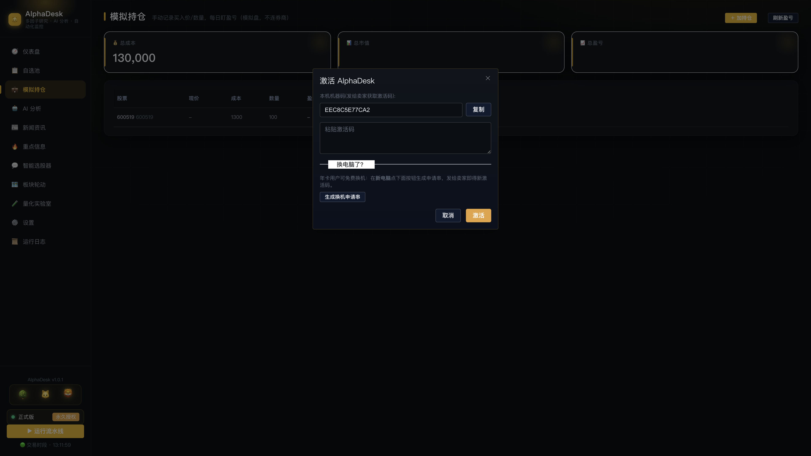
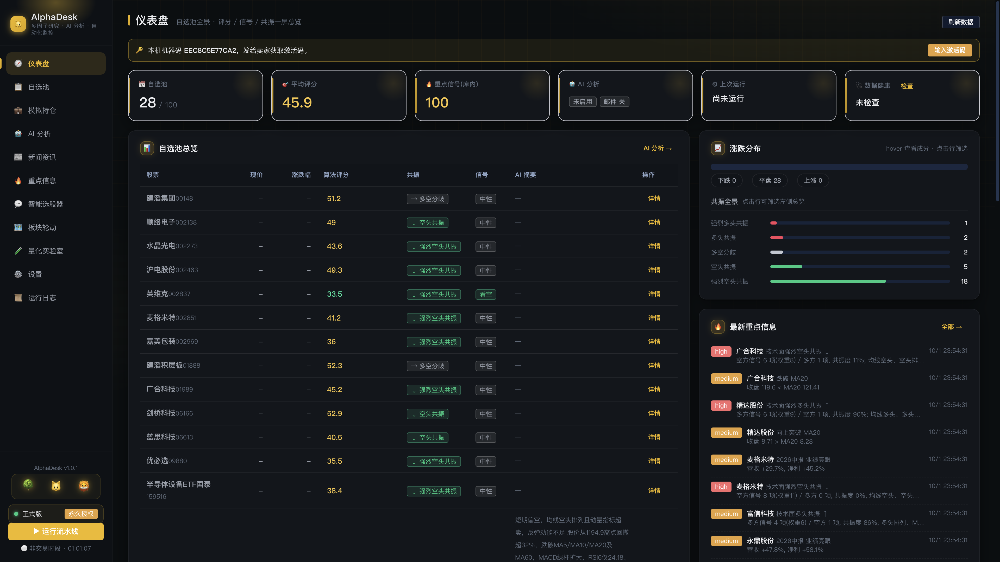
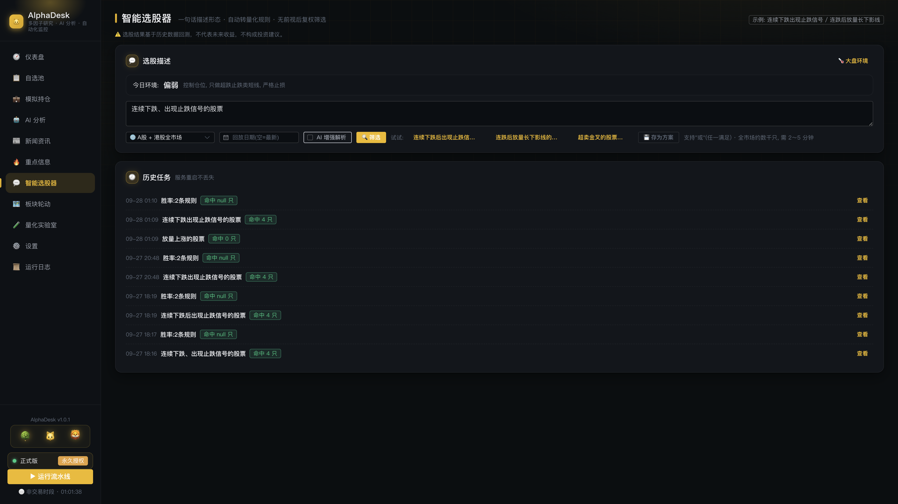
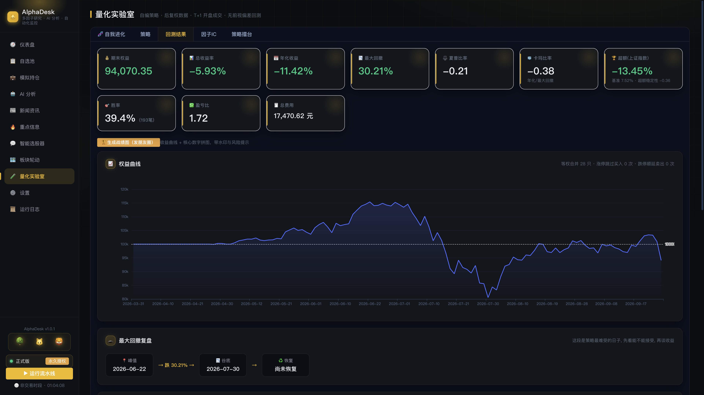
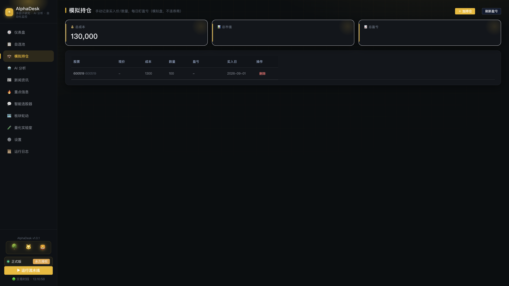
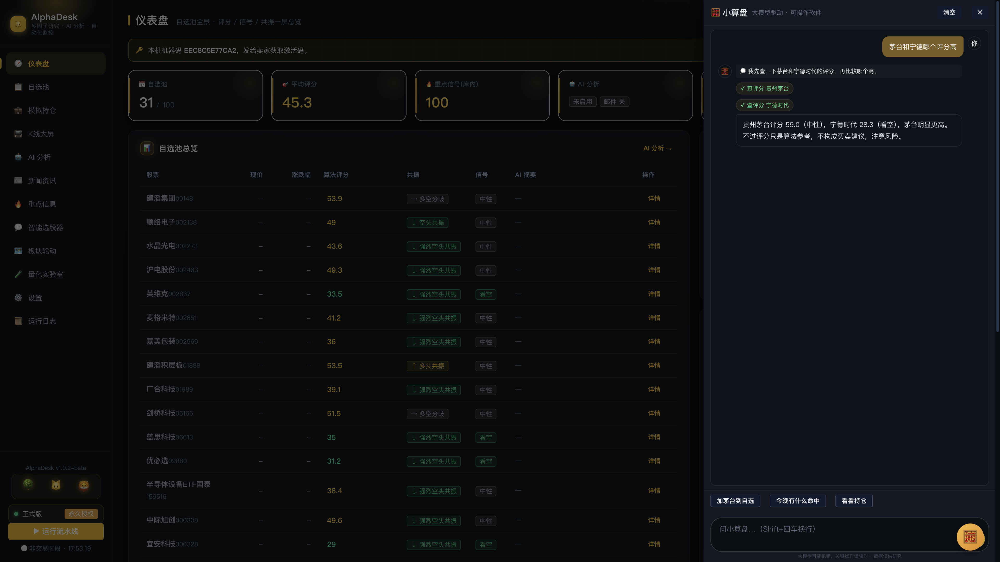
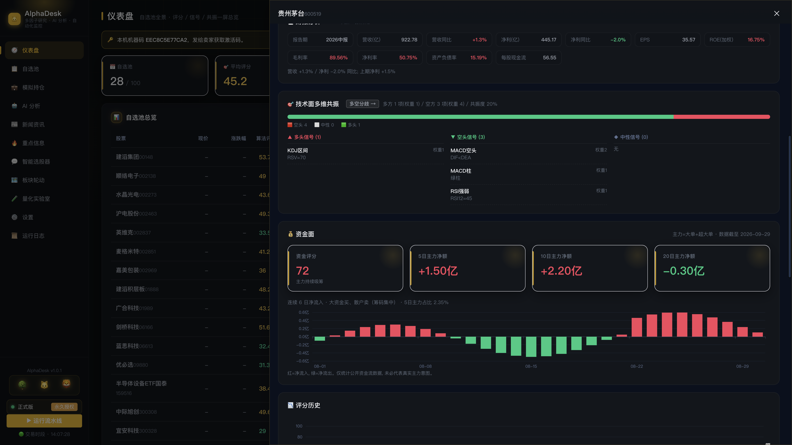
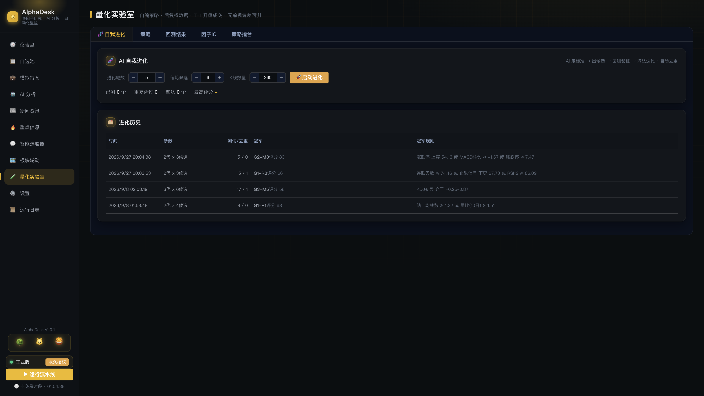

AlphaDesk-*-mac.zip，解压得 AlphaDesk.app，拖进"应用程序"。xattr -cr /Applications/AlphaDesk.app（App 在哪就写哪）。http://127.0.0.1:8200。AlphaDesk-*-win-beta.zip，解压到桌面（路径不要有中文）。start.bat。黑窗口一闪即后台运行，属正常。http://127.0.0.1:8200；没打开就手动输。964468802（备注 AlphaDesk）。

建议：先 10~30 只。池子是后面所有功能（选股范围、收盘扫描、持仓）的地基。
连续下跌后出现止跌信号的股票。写法技巧：用"或"表示任一满足；回放日期可填过去某天，验证"当时能不能选出来"。

一句话：凡是经不起回测的感觉，都是错觉。红了就扔，不心疼。


右下角 🅰️ 悬浮钮点开就是阿罗（Alpha 音译），软件的操作助手。 和"AI 分析"（给结论）不同，阿罗是动手干活的：加自选、查评分、切页面，一句话搞定。

提醒：阿罗不给买卖建议，只给事实和风险提醒；大模型偶尔犯错， 删自选这类动作执行前请看一眼确认卡。试用到期后阿罗只能查不能改，激活即恢复。
适合每天收盘后花 2 分钟扫一遍：形态走坏的，一眼就能挑出来。
重要：公开资金流是按单笔金额大小分类的推算值，不等于真实主力意图， 只能当"佐证"不能当"信号"。请和技术面/基本面一起看。

这不是"AI 炒股"，是"AI 替你试错"。冠军也请先过第五步的回测三问。

~/Library/Application Support/AlphaDesk；Windows 拷解压目录下的 AlphaDesk\data。http://127.0.0.1:8200；Windows 检查路径有无中文。xattr -cr（见第一节），右键打开。软件没坏，是苹果拦截无公证应用。964468802）。月卡 ¥29.9 / 年卡 ¥299。